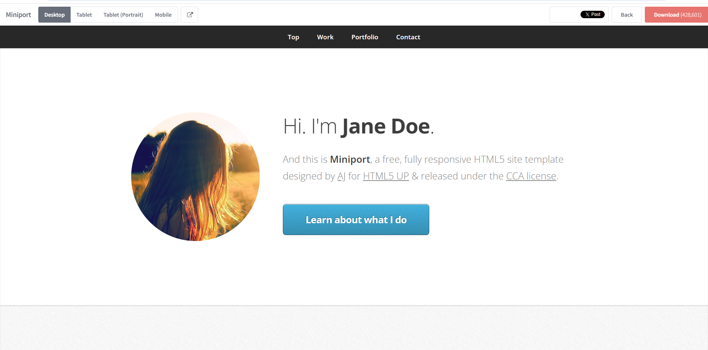

Hæ, ég heiti Svavar Dúi.
Þetta er portfolio-síða fyrir áfangann Tölvustudd framleiðsla. Hér má finna kynningu á mér, ferilskrá, lýsingu á vinnuferli verkefnis 1 og tengla á GitHub repository
Þetta er portfolio-síða fyrir áfangann Tölvustudd framleiðsla. Hér má finna kynningu á mér, ferilskrá, lýsingu á vinnuferli verkefnis 1 og tengla á GitHub repository
Ég er nemandi á þriðja ári í vélaverkfræði við Háskóla Íslands með áhuga á bæði tæknilegri og skapandi vinnu. Í áfanganum legg ég áherslu á að þróa færni í HTML og CSS, útgáfustýringu með Git og GitHub, og framsetningu verkefna í veflægu portfolio. Ég hef einnig áhuga á að kynnast betur þrívíðri hönnun, parametrískri hönnun og tengslum stafrænnar hönnunar við raunverulega framleiðslu, svo sem 3D prentun, geislaskurð og fræsingu. Í frítíma hef ég mikinn áhuga á hreyfingu og heilsu, er duglegur í ræktinni og hef æft bæði fótbolta og körfubolta.
Skipulag, áreiðanleiki, samvinna.
Í áfanganum er ég að þróa færni í HTML og CSS, útgáfustýringu með Git og GitHub, og grunnatriðum í þrívíðri og parametrískri hönnun fyrir stafræna framleiðslu.
Markmið mitt í áfanganum er að læra að vinna skipulega með stafræna framleiðslutækni og setja vinnuframlag mitt fram á skýran og faglegan hátt í veflægu portfolio. Ég vil bæta mig í útgáfustýringu með Git og GitHub, læra að skrásetja vinnuferli með texta og myndum og þróa betri skilning á verkefnastjórnun í hönnunar- og þróunarverkefnum. Einnig vil ég öðlast betri hæfni í þrívíðri hönnun, parametrískri hönnun og undirbúningi fyrir framleiðsluferla eins og 3D prentun, geislaskurð og fræsingu, ásamt því að kynnast grunnatriðum hugverkaréttar í tengslum við hönnun og stafræna framleiðslu.
Hér er ferilskráin mín í PDF-formi. Hægt er að opna hana í nýjum glugga eða sækja hana beint á tölvuna.
Vélaverkfræði – Háskóli Íslands
Tímabil (2023 – núna)
Er á þriðja ári í námi til BSc.-gráðu í vélaverkfræði
Menntaskólinn við Sund
Tímabil (2020 – 2023)
Lauk stúdentsprófi af Náttúrufræðibraut - Stærðfræði/eðlisfræðilínu með góðum árangri.
Laugalækjarskóli
Tímabil (2016 – 2020)
Lauk grunnskólaprófi með góðum árangri.
Bílastæðaþjónusta
Isavia
Sumar 2025
Í starfinu fólst að færa bæði beinskipt og sjálfskipt ökutæki, sinna almennu eftirliti á svæðinu og aðstoða farþega, ásamt því að veita upplýsingar um bílastæðaþjónustu flugvallarins og sinna símaþjónustu.
Hverfastöðin Fiskislóð - Garðyrkja
Reykjavíkurborg
Sumar 2022-2024
Í starfinu fólst að planta blómum, snyrta lóðir og hreinsa beð ásamt öðrum verkefnum tengd umhirðu borgarlands.
Nettó Lágmúli
Samkaup
2022-2023
Hlutastarf með skóla. Í starfinu fólst almenn afgreiðsla, aðstoð við sjálfsafgreiðslu, fylla á vörur og aðstoð við viðskiptavini í búðinni.
Dalbraut - Elliheimili
Reykjavíkurborg
Sumar 2023
Í starfinu fólst almenn eldhússtörf, s.s. uppvask, skömmtun á mat, undirbúa mat,
hella upp á kaffi og annað tilfallandi
Borgarbókasafnið Sólheimum
Reykjavíkurborg
Sumar 2021
Í starfinu fólust almenn útlán á bókum, raða bókum í hillur, merkja bækur og annað tilfallandi.
Bæjarvinnan
Reykjavíkurborg
Sumar 2018-2020
Í starfinu fólst að snyrta lóðir, hreinsa beð og mála á skólalóð.
HTML og CSS, útgáfustýring með Git og GitHub, grunnatriði í þrívíðri hönnun og parametrískri hönnun, skrásetning vinnuferla fyrir stafræna framleiðslu.
Adam Snær Sörensen s: 👉 894 1876
Milan Medic s: 👉 781 5201
Bjartur Máni Sigmundsson s: 👉 699 4494
Hér skrái ég hvernig ég bjó til vefsíðuna, með texta og myndum.
Ég valdi sniðmátið Miniport af HTML5 UP þar sem það hentar vel fyrir veflægt portfolio með skýru og einföldu skipulagi. Síðan er byggð upp sem ein síða með afmörkuðum köflum sem auðvelt er að fara á milli með valmyndinni, sem stuðlar að góðu aðgengi að efni og skýrri framsetningu upplýsinga. Í upphafi skoðaði ég nokkur mismunandi sniðmát á vefsíðunni HTML5 UP til að fá yfirsýn yfir hvaða uppsetning hentaði best fyrir verkefnið, bæði ein-síðu lausnir og sniðmát með undirsíðum, til að bera saman hvernig efni eins og ferilskrá, verkefni og vinnuferli væri sett fram. Ég lagði sérstaka áherslu á sniðmát með skýra valmynd og einfalt leiðarkerfi, þar sem markmið verkefnisins var að tryggja að notendur gætu auðveldlega fundið tengla á GitHub, heimildir og skrásetningu vinnuferlis. Einnig skoðaði ég sniðmát sem buðu upp á verkefnagallerí, þar sem það opnar möguleika á sjónrænni framsetningu framtíðarverkefna. Að lokum valdi ég Miniport þar sem það sameinar einfalda ein-síðu uppsetningu með responsive hönnun, sem gerir síðuna aðgengilega á bæði snjalltækjum og tölvum, og gerir mér kleift að skipta vefsíðunni í afmarkaða hluta eins og „Um mig“, „Ferilskrá“, „Vinnuferli“, „GitHub“ og „Heimildir“ án þess að flækja uppsetninguna með mörgum undirsíðum..
Mynd: sniðmátið áður en ég breytti því.

Ég setti inn mynd af sjálfum mér og vistaði hana í images möppunni í verkefninu til að tryggja að vefsíðan gæti hlaðið henni rétt inn. Ég tengdi myndina við HTML-skrána með tagi og stillti hana þannig að hún passaði við uppsetningu síðunnar. Í upphafi lenti ég í því að myndin fór yfir texta á forsíðunni, en leysti það með því að bæta við sérsniðnum CSS-reglum neðst í main.css. Þar notaði ég svokallað CSS override til að stilla hámarksbreidd myndarinnar og bæta við bili undir hana, þannig að hún raðaðist rétt í layoutinu án þess að trufla texta eða önnur efni á síðunni.
Aðrar myndir á síðunni, svo sem skjáskot af vinnuferlinu og sniðmátinu áður en breytingar hófust, bjó ég til með því að taka screenshots af skjánum. Ég vistaði þær sem myndskrár og setti þær einnig í images möppuna, og tengdi þær síðan inn á viðeigandi staði í HTML-kóðanum með tagi. Ég passaði að smækka myndirnar í viðeigandi stærð áður en þær voru settar á síðuna til að halda síðunni léttari og tryggja hraðari hleðslu.
Hvað ég vil fá út úr áfanganum: Ég vil læra að vinna skipulega með verkefni og setja vinnu mína fram á skýran og faglegan hátt í veflægu portfolio. Ég vil bæta mig í HTML og CSS og kynnast betur hvernig útgáfustýring með Git og GitHub virkar í raun. Aðaláherslan hjá mér er að fá betri skilning á þrívíðri og parametrískri hönnun og hvernig verkefni eru undirbúin fyrir framleiðsluferla eins og 3D prentun, geislaskurð og fræsingu, og sjá hvernig þetta tengist raunverulegum hönnunar- og þróunarverkefnum.
Hugmynd að lokaverkefni: Er að hugsa um að gera lítinn geymslukassa fyrir skrifborðið mitt, kassinn yrði þá hannður í hönnunarforriti og síðan skorinn með geislaskurði eða fræstur
Hér útskýri ég hvernig ég hlóð upp síðunni og hvaða áskoranir komu upp.
Ég notaði Git Bash aðferðina
git init
git add .
git commit -m "Initial commit"
git branch -M main
git remote add origin https://svavar-dui.github.io/tolvustudd-framleidsla/
git push -u origin mainHér eru allar heimildir og tenglar sem ég notaði við verkefnið.